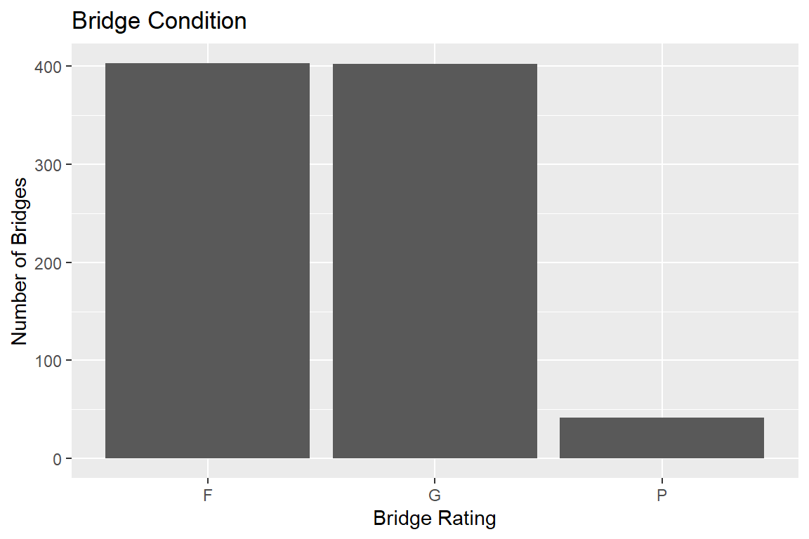

5 Summary
5.1 Introduction
Have you ever driven over a bridge and wondered how stable it is? The U.S.recently received its highest-ever infrastructure grade of a C, concerns remain about long-term safety and reliability, “Nebraska Infrastructure Report Card ASCE” (2025). High-profile failures like the 2024 collapse of the Francis Scott Key Bridge in Baltimore and the 2007 I-35W Bridge in Minneapolis highlight the risks and consequences of aging structures, DeLetter (2024). The National Transportation Safety Board has since identified 68 bridges at high risk of collapse from vessel strikes, with the Key Bridge found to be nearly 30 times over the acceptable risk threshold, “NTSB Recommends 68 Bridges in US Be Evaluated for Risk of Collapse from Vessel Strike” (2025). In Nebraska, 8.8% of bridges are structurally deficient, and 149 dams pose high hazard potential, raising questions about local infrastructure—especially in Omaha, NE. This report analyzes bridge condition data from the National Bridge Inventory, focusing on Omaha and finding the proportion of bridges that are at most risk of collapse. Assessing the probability of bridge collapse will be done by using condition-based variables and predictive modeling.
5.2 Methods
When looking at the National Bridge Inventory data, the first task is to get an overall picture of the bridges in Omaha, NE that are in poor condition, according to the bridge condition variable. This variable describes the bridge structural condition as good, fair, or poor; based on the bridge’s structural condition ratings.
Figure 5.1 shows the distribution of the bridge condition variable and how many bridges in the Omaha area have a rating of poor. The next step is to get a visual representation of the bridges that are in poor condition in Omaha, NE.
Figure 5.2 shows the visual distribution of the bridges that are in poor condition and gives a good understanding of the bridges at most risk of collapse right now. Figure 5.2 shows that some of the bridges that are at most risk of collapse are in downtown Omaha, which could lead to major economic and logistical issues. The economic impact of a bridge collapse is important for one to consider as it can impact the severity of the incident. The next step is looking at bridges that have high traffic and are in poor condition. The statistical analysis can then take place by finding the proportion of bridges that are in poor condition and comparing that to the proportion of bridges that are in poor condition and have high traffic. The analysis will continue with creating a linear model to predict bridge collapse and finally comparing the models predicted results to figure out its accuracy.
5.3 Results
The first step of the analysis is to find the descriptive statistics of the bridges that are in poor condition.
| mean | sd | n | median | |
|---|---|---|---|---|
| YEAR_BUILT_027 | 1954.714 | 20.072 | 42 | 1957 |
| TRAFFIC_LANES_ON_028A | 2.500 | 0.994 | 42 | 2 |
| ADT_029 | 12244.024 | 19761.961 | 42 | 2027 |
| DECK_COND_058* | 3.485 | 1.176 | 33 | 3 |
| SUPERSTRUCTURE_COND_059* | 3.545 | 1.148 | 33 | 3 |
| SUBSTRUCTURE_COND_060* | 3.606 | 0.827 | 33 | 4 |
| CHANNEL_COND_061* | 3.156 | 1.347 | 32 | 3 |
| CULVERT_COND_062* | 1.000 | 0.000 | 9 | 1 |
| STRUCTURAL_EVAL_067 | 3.595 | 1.515 | 42 | 4 |
| SCOUR_CRITICAL_113* | 4.031 | 1.121 | 32 | 4 |
| BRIDGE_CONDITION* | 1.000 | 0.000 | 42 | 1 |
Table 5.1 shows that the average year of the bridges built in Omaha, NE was 1955. This data also shows that all of the structural condition ratings are low, as the average is shockingly below 4 (out of 10). Also, the average daily traffic (ADT_029) mean is 12240 cars per day. The proportion of bridges that are in poor condition and poor condition with high traffic will show the severity of the infrastructure issue in Omaha, NE.
| Bridges at Risk | High Traffic Bridges at Risk |
|---|---|
| 0.0496 | 0.0142 |
Table 5.2 shows that the percent chance that a bridge in Omaha, NE is in poor condition is 4.96 %. Along with that, the percent chance that a bridge in poor condition has high traffic is 1.42%. This tells us that there is a minimal chance of coming across a bridge that is at risk of collapse by structural ratings. This was a solution primarily based on descriptive statistics, the next step is to develop a model. To do this task a collapse variable was created. This will be done by creating a binary variable that depends on if the bridge condition is poor and if the structural evaluation of the bridge in less than 4. These two variables give the best insight into if a bridge is at risk of collapse, hence they will be used to create the response variable for the model. An imputed estimation of missing values was used to form this model as the original data set contained many “NA” values.
The model is the following:
\[ \small\log\left( \frac{P(\text{collapse\_risk} = 1)}{1 - P(\text{collapse\_risk} = 1)} \right) = \beta_0 + \beta_1 \cdot \text{DECK\_COND\_058} + \beta_2 \cdot \text{OPERATING\_RATING\_064} + \beta_3 \cdot \text{YEAR\_BUILT\_027} \]
The model above is a generalized linear model, as the response variable is non - normal (Binomial), a normal linear model can not be used. The modification is done by using the logit link function. The regression coefficients will be found using a training subset of the data (80% of the rows), which will be found using the caret package. This will then allow us to test the prediction capabilities of our model using the remaining 20% of our data, the test data set. The prediction capabilities of this model were then tested using the predict function in R.
| Accuracy |
|---|
| 0.9702 |
From the model, when used in prediction on the test data set, the model predicts or analyzed that there is 1.79 % of bridges that are at risk of collapse. This is very similar to the value from the overall data which was 4.13 %. This shows the model is representative of the overall data set and the current condition, the final step is to test the accuracy of the model. Table 5.3 shows that the model has a 97% accuracy in predicting the defined collapse risk variable. Which shows that it can be predicted with good accuracy if a bridge is at risk of collapse in Omaha,NE.
5.4 Conclusion
When looking back at the opening question, do you ever think of how stable a bridge is when you are driving over top of it, then you have found the right place. This is because in the analysis we have found that 4.96% of the bridges in the Omaha,NE area have a bridge rating of “poor”. This shows that in Omaha, NE if you took a random sample of 100 bridges, 5 would come out with a “poor” rating. This is a major issue highlighting the lack of infrastructure maintenance and repair in the country. This prompted further investigation using the National Bridge Inventory data set which lead to the creation of a collapse variable based on summary variables and the formation of a generalized linear model. The model estimated that 1.79 % of bridges in Omaha are at risk of collapse. This is similar to what was found in the descriptive statistics and was predicted with a 97% accuracy.
Some issues that occur in the analysis is that there is no specifically defined criteria for if a bridge is going to collapse. This creates a issue when trying to predict or categorize if a bridge will collapse. This lead to the analyzing the descriptive statistics while also formulating a variable that categorized risk of collapse. This collapse variable was formed from two variables that were summary variables in themselves of bridge condition and structure. This lead to a variable that in many ways categorized the risk of collapse. Future implications of this research is using this model to further categorize bridges as at risk or needing attention. This will allow researchers to quickly evaluate if a bridge is in need of attention. Overall, the main product of this analysis is that bridges are not in good condition and money needs to be allocated to help mend and fix bridges so that we do not have another collapse in a major city like the Francis Scott Key Bridge in Baltimore, MD.